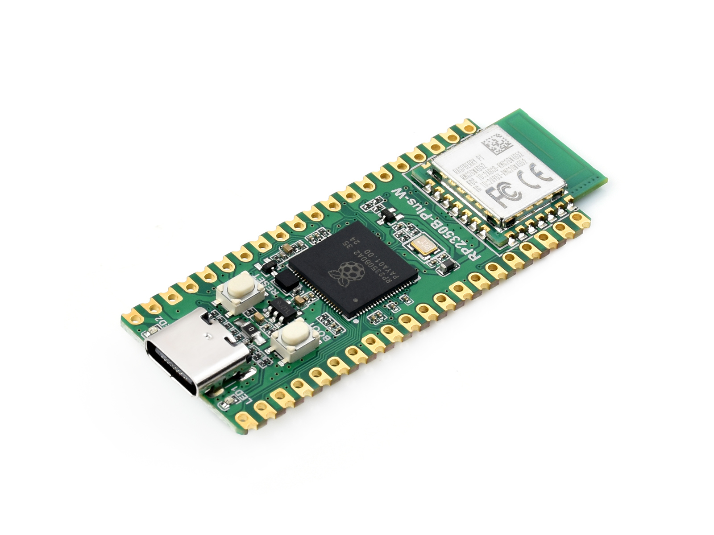
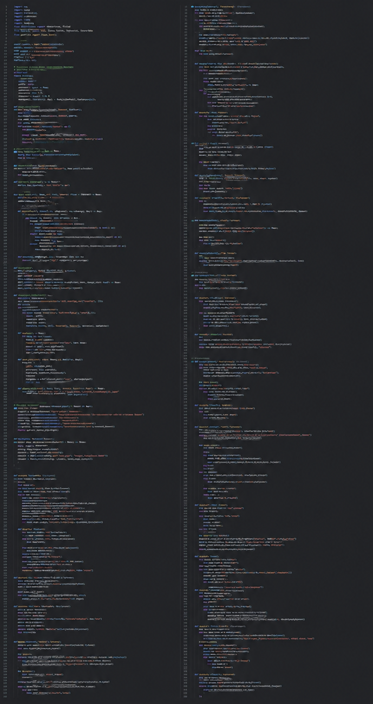

Embedded Controller
Raspberry Pi® RP2350B

The RP2350B handled sensor input, state decisions, and motor control for the robot.
Built and programmed an XRP robot in Python to navigate a changing three-zone maze, read a color target, find the matching light, and return to the starting area.

This freshman engineering project focused on the design and programming of an autonomous robot. I learned Python programming while also developing an understanding of the robot’s various peripherals and sensors. The goal was to program the robot to autonomously navigate a three-zone maze and complete a series of tasks. Because the maze configuration changed before each run, the robot had to respond to its environment rather than follow a fixed path. It was required to identify a color target in Zone 2, locate the corresponding light in Zone 3, and then return to the starting area in Zone 1.
My approach to this project centered on a state-machine architecture. Program organization was critical because I needed the robot’s behavior to be easy to debug, reliable, and adaptable as the maze configuration changed. The control logic used input from the ultrasonic and IR sensors to determine the robot’s surroundings and update the motor commands accordingly. This allowed the robot to continuously respond to sensor feedback and autonomously navigate the maze without relying on a fixed sequence of movements.

The RP2350B handled sensor input, state decisions, and motor control for the robot.

Separate states handled maze navigation, color detection, light selection, and the return trip while keeping the program organized and easier to debug.
The most challenging part of this project was getting the robot to drive straight. Mechanical issues between the motors and wheels caused the robot to consistently pull to the left or right, which made it difficult to accurately test the navigation logic and state-machine behavior. To correct this, I developed a PID controller that adjusted the motor outputs based on the robot’s heading error. This helped compensate for the uneven drivetrain behavior and allowed the robot to maintain a much straighter path during autonomous navigation.
The robot successfully navigated the changing three-zone maze, identified the target color in Zone 2, reached the matching light in Zone 3, and returned to Zone 1. The finished project demonstrated reliable sensor-based navigation and state-machine control on real hardware.